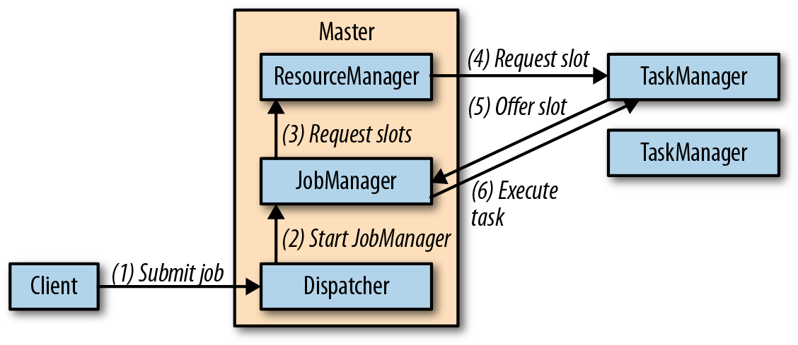
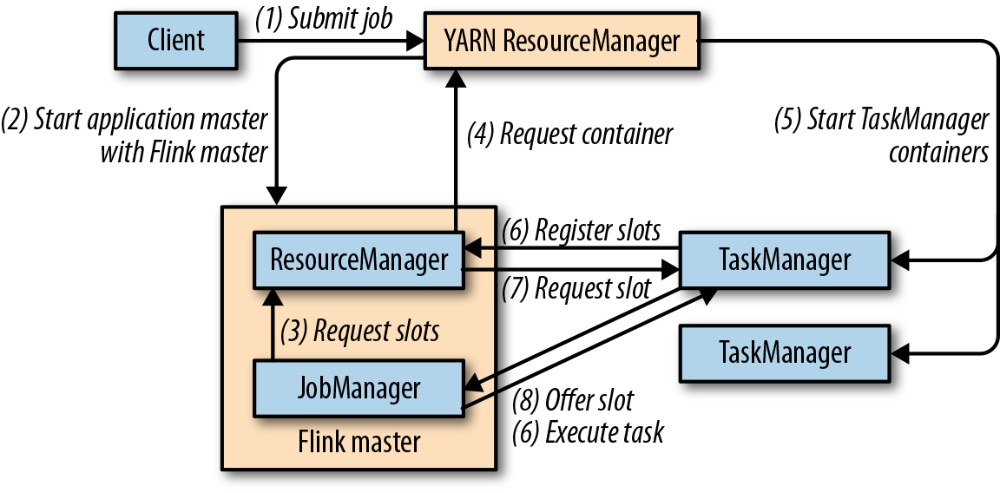

9. 搭建 Flink 运行流式应用
部署模式
独立集群
- 独立集群至少包含：一个主进程、一个 TaskManager 进程
- 主进程（线程）：Dispacher、ResourceManger
- TaskManager：将自己注册到 ResourceManager 中
- 主进程和工作进程不会因为故障而重启
- 只要有足够多的剩余 slot，作业就可以从工作进程故障中恢复
- 从主进程故障中恢复作业需要 HA 设置

tar xvfz flink-1.11.0-bin-scala_2.11.tgz
cd flink-1.11.0
./bin/start-cluster.sh # http://localhost:8081
./bin/stop-cluster.sh
Docker
# 启动主进程
docker run -d --name flink-jobmanager \
-e JOB_MANAGER_RPC_ADDRESS=jobmanager \
-p 8081:8081 flink:1.7 jobmanager
# 启动工作进程
docker run -d --name flink-taskmanager-1 \
--link flink-jobmanager:jobmanager \
-e JOB_MANAGER_RPC_ADDRESS=jobmanager flink:1.7 taskmanager
Apache Hadoop YARN
- 作业模式（job mode）：运行单个任务，作业结束后集群停止
- 会话模式（session mode）：启动一个长时间运行的 Flink 集群，可以运行作业，需要手动停止
# job mode
./bin/flink run -m yarn-cluster ./path/to/job.jar
# session mode
./bin/yarn-session.sh # start a Flink YARN session
./bin/flink run .path/to/job.jar # submit job to session

Kurbernetes
- Deployment：主进程 Pod、工作进程 Pod
- Service：将主进程 Pod 的端口暴漏给工作进程所在的 Pod
# 注册在 Kubernetes
kubectl create -f master-deployement.yaml
kubectl create -f worker-deployement.yaml
kubectl create -f master-service.yaml
kubectl get deployments # 查看所有 Deployment 的状态
kubectl port-forward deployment/flink-master 8081:8081 # 端口转发
# 关闭 Flink 集群
kubectl delete -f master-deployement.yaml
kubectl delete -f worker-deployement.yaml
kubectl delete -f master-service.yaml
高可用性设置
依赖于 Apache ZooKeeper 以及某种持久化远程存储（HDFS、NFS、S3）
# ./conf/flink-conf.yaml
# 通过 ZooKeeper 开启 HA 模式
high-availability: zookeeper
# 提供 ZooKeeper Quorum 的服务器列表
high-availability.zookeeper.quorum: address1:2181[,...],addressX:2181
# 设置作业员数据的远程存储位置
high-availability.storageDir: hdfs:///flink/recovery
# (optional) 在 ZooKeeper 中为全部 Flink 集群设置基础路径
# 将 Flink 和其他使用 ZooKeeper 集群的框架进行隔离
high-availability.zookeeper.path.root: /flink
独立集群
- 无须依赖资源提供者，需要后备 Dispatcher 和 TaskManager 进程
- ZooKeeper 会在所有 Dispacher 中选出一个负责执行应用的领导者
# ./conf/flink-conf.yaml
# (optional) 在 Zookeeper 中为 Flink 集群设置路径
# 将多个 Flink 集群互相隔离，集群 ID 是查找故障集群元数据的必要信息
high-availability.cluster-id: /cluster-1
YARN
# yarn-site.xml
# ApplicationMaster 尝试执行的最大次数，default=2（即重启一次）
yarn.resourcemanager.am.max-attempts: 4
# ./conf/flink-conf.yaml
# 应用最多重启 3 次（包括首次启动）
# 该值必须小于或等于配置的最大尝试次数
yarn.application-attempts: 4
Kurbernetes
- 主进程HA：
./conf/flink-conf.yaml- ZooKeeper Quorum 节点的主机名，持久化存储路径，Flink 集群ID
集成 Hadoop 组件
- 为 Flink 添加 Hadoop 依赖的方式
- 使用针对特定 Hadoop 版本构建的 Flink 二进制发行版
- 使用特定版本的 Hadoop 构建 Flink（mvn）
- 使用不带 Hadoop 的 Flink 发行版，并手动配置 Classpath
文件系统配置
| FS | URI协议 | 备注 |
|---|---|---|
| 本地文件系统 | file:// | 包括本地挂载的网络文件系统（NFS、SAN） |
| Hadoop HDFS | hdfs:// | |
| Amazon S3 | s3:// | 分别基于 Apache Hadoop 和 Presto 实现 |
| OpenStack Swift FS | swift:// | swift-connector JAR |
系统配置
- Java 和类加载：默认使用 PATH，可以通过配置文件中的 JAVA_HOME 或 env.java.home 指定
- CPU：taskmanager.numberOfTaskSlots（默认：每个 TaskManager 一个 slot）
- 内存和网络缓冲
- jobmanager.heap.size（默认 1GB）
- taskmanager.heap.size（JVM、网络 Netty、RocksDB 状态后端）
- 网络：taskmanager.network.memory.fraction（segment-size/min/max）
- RocksDB：每个列簇需要大约 200MB - 240MB 的堆外内存
- 磁盘存储
- io.tmp.dirs（默认为 java.io.tmpdir 或 linux 下的 /tmp 目录）
- blob.storage.directory（常用于大文件，例如应用 jar 包）
- state.backend.rocksdb.localdir（默认为 io.tmp.dirs）
- 检查点和状态后端
- state.backend：async/incremental
- state.checkoints.dir，state.savepoints.dir
- 配置本地恢复：state.backend.local-recovery=true（本地状态副本）
- 安全性
- keytabs（首选）
- Hadoop委托令牌：会在一段时间后过期